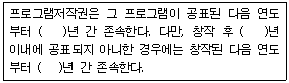
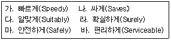
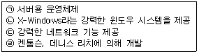
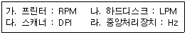

전자상거래운용사 (2006-09-03 기출문제)
1과목: 인터넷 일반
1. 다음 네트워크 프로토콜 중에서 계층화된 프로토콜(layered protocol) 중 OSI(Open system Interconnection) 7Layer 모델이 가장 보편화되어 있다. 7Layer 중 실제 회선을 확립하고, 유지하고, 절단하기 위한 기계적, 전기적, 기능적, 절차적 특성을 정의하는 계층은?
- Session Layer
- Network Layer
- Data Link Layer
- Physical Layer
(정답률: 알수없음)

2. 다음은 웹에서 사용하는 프로토콜 중의 하나인 FTP에 대한 설명이다. 다음 중 가장 옳지 않은 것은?
- FTP(File Transfer Protocol)란 서로 다른 컴퓨터 간의 파일 전송을 위한 표준 통신규약이다.
- FTP를 이용하기 위해서는 FTP가 설치되어 있는 사이트의 도메인 이름을 알아야 한다.
- FTP는 ASCII 현태의 파일 송수신만 가능하다.
- FTP 서비스를 이용하기 위해서는 이를 가능하게 해주는 FTP 클라이언트 프로그램을 사용해야 한다.
(정답률: 알수없음)
3. 인터넷에서 지켜야 할 예의범절을 네티켓이라 한다. 다음 중 홈페이지 제작 시 적절한 네티켓으로 보기 어려운 것은?
- 홈페이지가 사용자에게 화려한 인상을 줄 수 있도록 가급적이면 큰 이미지나 동영상 파일을 게재한다.
- 공개용 프로그램을 자료실에 등록하여 사용자에게 편의를 제공한다.
- 정보는 최신의 것으로 방문자에게 신선한 감을 주어야 한다.
- 글을 이용할 경우에는 출처를 기재한다.
(정답률: 알수없음)
4. ASP의 request 객체에서 지원되는 컬렉션이 아닌 것은?
- Form
- QueryString
- Cookies
- Client
(정답률: 알수없음)
5. 스크립트(Script) 언어에 관한 설명 중 가장 올바르지 않은 것은?
- PHP는 클라이언트 사이드 스크립트 언어이다.
- JavaScript, VBScript, PHP 등이 있다.
- 스크립트 언어는 기본적으로 인터프리터형 언어를 의미하지만 컴파일이 가능한 스크립트 언어도 있다.
- JavaScript는 초기에 넷스케이프사에서 개발하였다.
(정답률: 알수없음)
6. 다음 중 검색엔진의 검색박스에서 “검색” xor "엔진“이라고 입력하고 단어별(키워드) 검색엔진을 작동했을 경우 나타날 수 있는 결과는?
- “검색”과 “엔진”이 동시에 있는 본문들이 나타난다.
- “검색”이 있는 본문들과 “엔진”이 있는 본문들이 함께 나타난다.
- “검색”과 “엔진”이 있는 본문 중 “검색”과 “엔진” 단어가 동시에 있는 본문들을 제외하고 나타난다.
- “검색”이 있는 본문 중에서 “엔진”이 있는 본문을 제외하고 나타난다.
(정답률: 알수없음)
7. 다음 중 JavaScript의 특징에 관한 설명 중 옳지 않은 것은?
- 자바스크립트는 스크립트 언어이다.
- HTML 문서 내에 삽입하여 사용할 수 있다.
- 사용자 이벤트 프로그래밍에 적합하다.
- 완전한 객체지향(Object-Oriented) 언어이다.
(정답률: 알수없음)
8. 나모 웹에디터나 드림위버 등과 같은 도구에서 홈페이지 제작을 체계적으로 관리하여, 문서의 수정, 추가, 삭제 등을 손쉽게 할 수 잇도록 해주는 기능은?
- 사이트
- 타임라인
- 팔레트
- 클립아트
(정답률: 알수없음)
9. 다음 중 HTML에 대한 설명 중 가장 옳지 않은 것은?
- HTML은 HyperText Markup Language의 약자이다.
- HTML은 SGML에 기초하여 제정되었다.
- HTML에서의 색상은 CMYK 형식으로 지정한다.
- HTML은 사용하는 컴퓨터 기종에 독립적이다.
(정답률: 알수없음)
10. 다음 중 H3 태그에 의해 출력되는 글자색이 녹색이 되도록 바르게 작성한 것은?
- ＜H3 style="color:green"＞ 녹색＜/H3＞
- ＜H3 style="color=green"＞ 녹색＜/H3＞
- ＜H3 style="fontr:green"＞ 녹색＜/H3＞
- ＜H3 style="font=green"＞ 녹색＜/H3＞
(정답률: 알수없음)
11. 다음 중 SQL 데이터 조작문에서 데이터를 검색하는 명령어는?
- SEARCH
- SELECT
- VIEW
- UPDATE
(정답률: 알수없음)
12. 다음 중 ＜A＞ 태그에 대한 설명으로 가장 옳은 것은?
- 같은 문서 내에서 이동하도록 하기 위해서는 이동할 위치를 설정해야 하고 이것은 ＜A HREF="위치이름"＞으로 설정한다.
- 같은 문서 내에서 이동시키기 위해서는 ＜A HREF="위치이름"＞...＜/A＞와 같이 작성한다.
- 다른 문서에 지정된 위치로 이동하기 위해서는 ＜A HREF="파일명:위치이름"＞...＜/A＞과 같이 작성한다.
- 위치 이름을 영문으로 작성하는 경우 대소문자를 구분한다.
(정답률: 알수없음)
13. 아래 ＜보기＞는 프로그램 저작권에 대한 설명이다. 다음의 빈칸에 공통으로 들어가는 내용은?

- 20
- 30
- 40
- 50
(정답률: 알수없음)
14. 다음의 JavaScript 문법에 관한 설명 중 가장 옳지 않은 것은?
- JavaScript에서 예약어 break는 변수로 사용할 수 없다.
- JavaScript에서 한글은 변수로 사용할 수 없다.
- JavaScript에서 변수의 마지막 글자는 항상 영문자로 끝나야 한다.
- 영문자에서 대문자 ABC와 소문자 abc는 다른 변수 이름으로 처리한다.
(정답률: 알수없음)
15. 다음 중 태그문서에 대한 설명으로 옳은 것은?
- 태그는 대소문자를 구별한다.
- 태그의 형식이 ＜TAB＞~ ＜/TAG＞일 경우 다른 태그 구조와 겹쳐도 된다.
- HTML에서는 줄 바꿈이 인식된다.
- HTML에서는 많은 여백이 있을 경우 하나의 공백으로 인식한다.
(정답률: 알수없음)
16. 다음 중 아웃룩 익스프레스의 기능과 가장 거리가 먼 것은?
- 편지 수신
- 뉴스그룹 검색
- 주소록 관리
- 인터넷 방송
(정답률: 알수없음)
17. 다음 중 스팸메일의 영향과 가장 거리가 먼 것은?
- 시간 낭비
- 생산성 향상
- 바이러스 감염
- 정신적 불쾌감
(정답률: 알수없음)
18. 다음 중 인터넷에서 자원의 위치를 나타내는 URL의 구성요소가 아닌 것은?
- 프로토콜
- 호스트 도메인 이름
- 디렉토리 경로
- 이메일 주소
(정답률: 알수없음)
19. 다음 중 인트라넷과 엑스트라넷의 가장 큰 차이점을 설명한 것은?
- 적용 기술의 차이
- 정보공유 범위의 차이
- 기능의 차이
- 구축비용의 차이
(정답률: 알수없음)
20. 다음 중 인터넷 검색엔지의 유형이 아닌 것은?
- 키워드 검색방식
- 디렉토리(주제별) 검색방식
- 메타형 검색방식
- 로봇 검색방식
(정답률: 알수없음)
2과목: 전자상거래 일반
21. 다음 중 전자상거래로 인한 물류의 특성과 가장 거리가 먼 것은?
- 물류센터에서 유통점을 거치지 않고 소비자에게 직접 배달
- 배송시간의 단축화
- 물류영역에 있어서 최종 배송점의 제한 및 집중화
- 소비자의 배송시간 선택 가능
(정답률: 알수없음)
22. 다음에서 전자상거래의 장점으로 볼 수 없는 것은?
- 상거래의 시간적, 공간적 제약을 극복할 수 있어 전세계를 상대로 영업할 수 있다.
- 상거래의 거점이 가상공간이므로 고정비용 및 간접비용을 절감할 수 있다.
- 제품 간의 경쟁이 약화되고 브랜드 중요성이 감소한다.
- 시장 진입 장벽이 낮고 시장 확대가 용이하다.
(정답률: 알수없음)
23. 다음 전자결제 시스템의 향후 전방에 대한 설명 중 가장 옳지 않은 것은?
- 전자상거래 시스템을 구축하기 위해서는 지속적으로 발전하는 기술변화를 수용할 수 있어야 한다.
- 전자상거래는 개방형 네트워크인 인터넷상에서 이루어지므로 거래의 안정성과 신뢰성을 보장하기 위한 보안 기술이 보다 발전되어야 한다.
- 기본적으로 고액 결제의 경우에는 전자화폐를 기반으로 하는 구조로, 소액 거래의 경우에는 신용카드 또는 이에 상응하는 수단으로 전자결제가 전개되어질 것으로 예측된다.
- 여러 가지 유형별 전자결제 시스템은 전자상거래 기술의 급속한 발전으로 인하여 예측 불가능한 것이 현실이다.
(정답률: 알수없음)
24. 전자상거래 시스템을 백오피스와 프런트오피스로 구분하는 경우 백오피스의 기능으로 가장 옳지 않은 것은?
- 주문의 접수 및 배송
- 상품의 검색
- 반품 및 하자 처리
- 상품의 등록 및 수정
(정답률: 알수없음)
25. 다음 중 인터넷을 통한 전자상거래의 특성으로 가장 옳지 않은 것은?
- 지역적 한계를 극복하고 넓은 접근성을 유지할 수 있다.
- 사용자들의 즉각적인 반응을 유도할 수 있다.
- 고객의 위치를 언제 어디서나 파악할 수 있다.
- 인터넷을 통해 고객들에게 24시간 서비스를 해 줄 수 있다.
(정답률: 알수없음)
26. 다음 중 기업 간 전자상거래의 기대효과로 볼 수 없는 것은?
- 재고증가로 인한 자산의 가치 증가
- 구매시간과 비용의 감소
- 구매와 관련한 서류처리 착오의 감소
- 거래의 투명성 재고
(정답률: 알수없음)
27. 전자상거래시스템에서 사용자 관점의 거래 처리 단계를 고객접속, 상품검색, 장바구니, 고객인증, 주문처리 단계로구부할 수 있다. 다음 중 주문처리 단계의 업무에 속하지 않는 것은?
- 주문배송
- 주문결제
- 주문처리 확인
- 제품평가
(정답률: 알수없음)
28. 전자조달, e-marketplace 등은 다음 중 어떤 유형의 전자상거래라 할 수 있는가?
- B2B
- B2C
- P2P
- G2C
(정답률: 알수없음)
29. 마이클 포터의 산업환경분석 모형인 5-Force에서 5-Force에 들어가지 않는 것은?
- 구매자
- 공급자
- 신규진입자
- 정부
(정답률: 알수없음)
30. 다음 중 ＜보기＞에서 물류의 목표를 달성하기 위한 원칙(4S 또는 3S 1L)을 모두 고른 것은?

- 가, 나, 다, 라
- 가, 나, 라 ,마
- 나, 다, 라, 마
- 다, 라, 마, 바
(정답률: 알수없음)
31. 다음 중 전자상거래에서 물리적 상품의 배달방법으로 가장 적합하지 않은 것은?
- 고객의 주문이 들어오는 대로 온라인으로 전달하는 방법
- 배송은 배송업체에게 위탁하고, 재고는 각 상품의 공급업체에게 맡기는 방식
- 배송은 배송업체에게 위탁하고, 전자상거래회사에서 별도의 유통센터를 마련하여 모든 상품의 재고를 보유, 운영하는 방법
- 상품 배송, 재고 유지 모두를 상품 공급업체에게 맡겨 버리는 방법
(정답률: 알수없음)
32. 인터넷의 발전으로 인해 상거래 환경에도 커다란 변화가 이루어지고 있다. 다음 중 이러한 변화를 가장 절절히 설명한 것은?
- 인터넷의 발전으로 인해 외상거래가 보다 용이해 졌다.
- 인터넷의 발전에 따라 판매원과 직접 접촉하는 것이 보다 용이해 졌다.
- 인터넷의 발전으로 상거래에서 제품에 대한 공급자의 교섭력이 더욱 강해졌다.
- 인터넷의 발전으로 정보제품 등은 중간 유통단계를 거치지 않는 직접 전달이 가능해 졌다.
(정답률: 알수없음)
33. 다음 중 인터넷 비즈니스(e-Business) 환경에서의 고객에 대한 설명으로 가장 옳지 않은 것은?
- 고객은 수동적인 입장을 떠나 상품 서비스의 질과 가격을 직접 결정하기 원하는 추세이다.
- 고객의 요구는 다양해지고 이에 따라 제품은 개인화(Personification)되고 있다.
- 교섭력(bargaining power)은 고객에서 공급자로 이동하고 있다.
- 고객의 거래 불안감을 해소하는 것이 전자상거래의 활성화에 매우 중요하다.
(정답률: 알수없음)
34. 다음 중 전자상거래에 대한 서령으로 가장 옳지 않은 것은?
- 판매시간과 판매단계가 단축되며, 직접 판매가 가능하다.
- 특정한 집단을 표적으로 정하여 접근할 수 있다.
- 쌍방향적 정보를 제공하며, 소비자의 자발적인 참여가 가능하다.
- 고객과의 자은 접촉을 통하여 상품의 가격을 예측하기 쉽다.
(정답률: 알수없음)
35. 인터넷 광고에 있어 전자메일을 이용한 마케팅 기법에 대한 설명 중 옳은 것은?
- 퍼미션 마케팅(Permission Marketing) : 사용자의 허락을 받고 원하는 정보를 제공하는 방법이다. 즉 고객은 관심분야의 정보를 쉽게 얻어서 좋고, 정보제공자는 원하는 고객에게 효과적인 마케팅 활동을 가능하게 하는 마케팅 방법이다.
- 옵트인 마케팅(Opt-in Marketing) : 소비자들은 과거 디지털 시대 이전의 습성과 이후의 습성을 동시에 지니고 있다. 따라서 전통적 마케팅 방법과 인터넷 마케팅을 적절하게 구사하는 마케팅 방법이다.
- 바이러스 마케팅(Virus Marketing) : 인터넷 이용자들의 전자메일에 바이러스를 넣어 광고하는 방법이다.
- 제휴 마케팅 : 서비스를 판매하는 사이트가 소비자의 구매 욕구에 따라 여러 서비스업체와 제휴하여 광고하는 방법이다.
(정답률: 알수없음)
36. 광고효과를 계산할 때 1,000명(Impression)당 비용으로 나타내는 것은?
- CRM
- CPM
- GRP
- CPC
(정답률: 알수없음)
37. 인터넷 쇼핑몰의 주요 장점으로 가장 거리가 먼 것은?
- 무한한 전시 공간
- 용이한 제품 선택
- 저렴한 구매
- 직접방문 구매
(정답률: 알수없음)
38. 다음 중 로그 파일을 통해 얻을 수 있는 정보로서 가장 옳지 않은 것은?
- 방문자의 사이트 만족도
- 콘텐츠별 방문 빈도 및 체류 시간
- 방문자의 접속 도메인과 시간대 및 요일
- 방문자의 방문경로
(정답률: 알수없음)
39. 다음 중 웹페이지의 설계 시 준수하여야 할 원칙으로 가장 옳지 않은 것은?
- 플래쉬와 동영상 등의 첨단 기술을 최대한 많이 사용하여 작성한다.
- 화면이 두 번 이상 길게 스크롤(Scroll)되는 문서는 피하는 것이 좋다.
- 사용자가 웹 페이지 간의 이동이 용이하도록 한다.
- 다양한 화면의 크기와 해상도로 이용할 수 있도록 웹 페이지를 만든다.
(정답률: 알수없음)
40. 검색 사이트에서 검색어를 입력하면 검색 결과가 나오는 화면에 관련업체의 광고가 노출되도록 하는 광고 기법을 무엇이라 하는가?
- 플로팅 애드
- 리치 미디어
- 키워드 광고
- TI(Transparent Interactive) 광고
(정답률: 알수없음)
3과목: 컴퓨터 및 통신 일반
41. 다음 중 TCP/IP에 대한 설명으로 가장 옳지 않은 것은?
- TCP는 메시지나 파일들을 좀 더 작은 패킷으로 나누어 인터넷을 통해 전송하는 일과 수신된 패킷들을 원래 메시지로 재조립하는 일을 담당한다.
- IP는 각 패킷의 주소 부분을 처리함으로써 패킷들이 목적지에 정확하게 도달할 수 있게 한다.
- TCP/IP는 3개의 층으로 구성되는데 애플리케이션층, 트랜스포트층, 네트워크층이다.
- 애플리케이션층은 telnet, SMTP 등의 서비스를 제공한다.
(정답률: 알수없음)
42. 어떤 꽃이 있는데 이에 대한 이미지를 모두 50가지의 색상을 이용하여 컴퓨터로 표현하고자 한다. 이 경우 하나의 화소는 최소한 몇 개의 비트(bit)가 필요한가?
- 2bit
- 5bit
- 6bit
- 10bit
(정답률: 알수없음)
43. 다음 중 사설 IP 주소에 속하지 않는 것은?
- 211.195.54.200
- 192.168.4.200
- 172.30.80.200
- 10.2⑤.56.200
(정답률: 알수없음)
44. 다음 중 네트워크 관리자들이 조직 내의 네트워크상에서 IP 주소를 중앙에서 관리하고 할당해 줄 수 있도록 해주는 프로토콜은?
- IIS
- DHCP
- LDAP
- NTFS
(정답률: 알수없음)
45. 다음 인터넷에 대한 설명 중 옳지 않은 것은?
- 인터넷은 네트워크상의 사용자들이 접속되어 있는 전세계를 연결하는 컴퓨터 통신망이다.
- 네트워크를 통하여 접근할 수 있는 모든 자원 또는 정보의 교환은 HTTP 프로토콜을 이용한다.
- 인터넷상의 모든 호스트 컴퓨터는 고유한 IP를 가진다.
- 인터넷은 1969년 미국 국방부가 군사용으로 구축한 ARPANet에서 시작되었다.
(정답률: 알수없음)
46. 다음은 서버의 종류 및 그와 관련된 설명이다 다음 중 가장 옳지 않은 것은?
- 전자메일 서버 : ID를 가진 전자메일서버 사용자의 전자메일을 송수신 하는 컴퓨터
- 웹 서버 : 웹 브라우저를 이용하여 인터넷 홈페이지를 검색할 수 있는 컴퓨터
- NFS 서버 : 네트워크 파일 시스템으로 네트워크에 접속되어 있는 다른 컴퓨터의 파일 시스템을 공유하기 위한 분산 파일 공유 컴퓨터
- FTP 서버 : 파일 전송 프로그램을 이용하여 ID를 가진 사용자에게 파일을 송수신하는 컴퓨터
(정답률: 알수없음)
47. 다음 중 특정 조직의 LAN과 외부 네트워크 사이에서 방화벽 역할을 수행하며, 동시에 여러 외부 서버의 데이터를 대신 받아주는 역할을 하는 인터넷 서버는?
- 웹 서버
- FTP 서버
- 프록시 서버
- 뉴스 서버
(정답률: 알수없음)
48. 다음 중 와이브로(WiBro)에 대한 설명으로 가장 옳지 않은 것은?
- 2.3GHz 주파수를 사용하는 초고속 휴대 인터넷을 지칭한다.
- Wireless Broadband의 줄임말이다.
- 무선랜과 Wi-Fi에 비해 도달거리가 짧아서 이동 중일 때는 접속이 끊기는 단점이 있다.
- 와이브로 기술 표준 HPi(High-Speed Portable internet)는 한국 기업들이 중심이 되어 개발한 국제기술표준이다.
(정답률: 알수없음)
49. 다음 전자메일 서버와 관련된 설명 중 가장 옳은 것은?
- SMTP서버는 메일을 수신하는 서버이다.
- POP3는 메일을 송신하는 서버이다.
- 메일서버는 웹상에서 서비스 될 수 없다.
- SMTP와 POP3는 하나의 서버컴퓨터에서 구동 될 수 있다.
(정답률: 알수없음)
50. 다음 중 SSL의 특징으로 가장 옳지 않은 것은?
- SSL은 인터넷 응용과 TCP/IP 계층 사이에 존재하는 프로토콜이다.
- 웹을 위한 것이므로 http만 가능하고 telnet, ftp 등에서는 사용할 수 없다.
- 실제 암호화된 정보는 새로운 암호화 소켓 채널을 통하여 전송한다.
- 정보의 교환 간에는 인증수단으로 RSA 등을 이용한다.
(정답률: 알수없음)
51. 다음 중 ＜보기＞와 같은 4가지 특징을 갖는 운영체제는 무엇인가?

- Windows XP
- UNIX
- Window 2000
- LINUX
(정답률: 알수없음)
52. 윈도우2000에서 제공하는 인증절차는 모두 4가지가 있다. 다음 중 인증의 종류와 관련된 설명으로 가장 옳은 것은?
- 익명 접근 : 웹페이지를 액세스하기 전에 사용자 이름과 암호를 입력하도록 요구
- 기본 인증 : IIS5.0에서만 제공되는 인증으로 해싱을 통하여 전달되는 인증
- 윈도우통합인증 : 사용자 이름과 암호가 네트워크를 통하여 전달되지 않는 안전한 인증
- 다이제스트인증 : 사용자이름 또는 암호를 입력하지 않아도 웹사이트에 접근 가능
(정답률: 알수없음)
53. 인터넷을 통해 송수신하는 저오는 게이트웨이와 브리지를 거치게 된다. 그러나 크래커들은 게이트웨이를 해킹해서 지나는 메시지들을 읽을 수 있다. 이러한 방법으로 인터넷의 정보를 가로채는 것을 무엇이라고 하는가?
- 스니핑(Sniffing)
- IP 스푸핑(IP Spoofing)
- 크래킹(Cracking)
- 클리퍼 칩(Clipper Chip)
(정답률: 알수없음)
54. 인터넷 트래픽을 원활하게 소통시키기 위한 인터넷 연동 서비스로서, 인터넷 트래픽 교환을 위한 인터넷 스위치 장비를 제공하는 것을 일컫는 용어는 무엇인가?
- IX
- Backbone
- ISP
- Data Center
(정답률: 알수없음)
55. 아래 ＜보기＞는 컴퓨터시스템에서 사용하는 장치와 관련된 표현단위이다. 다음 중 이들의 관계가 가장 옳게 연결된 것은?

- 가, 다
- 가, 라
- 나, 라
- 다, 라
(정답률: 알수없음)
56. 다음 중 POP3에 대한 설명으로 옳지 않은 것은?
- 전자우편을 수신하기 위한 표준 프로토콜이다.
- 인터넷 서버가 사용자를 위해 전자우편을 수신하고 그 내용을 보관하기 위해 사용되는 클라이언트/서브 프로토콜이다.
- 사용자는 주기적으로 서버에 있는 자신의 메일 수신함을 점검하고, 만약 수신된 메일이 있으면 클라이언트 쪽으로 다운로드한다.
- 한번 읽은 메일을 다시 확인하기 위해서는 다시 서버에 접속해야 하는 단점이 있다.
(정답률: 알수없음)
57. 기업에서 사용하는 각종 컴퓨터 프로그램 및 솔루션을 판매하는 것이 아니라 온라인을 통해 빌려주는 사업을 무엇이라 하는가?
- ERP(Enterprise Resource Planning)
- SCM(Supply Chain Management)
- ASP(Application Service Provider)
- IP(Information Provider)
(정답률: 알수없음)
58. 다음 중 인터넷 방송에서 실시간으로 동영상이나 오디오를 보고 듣게 하는 필수적인 기술은?
- Streaming
- Push
- VOD
- spam
(정답률: 알수없음)
59. 다음 중 최근 바이러스의 특징과 거리가 먼 것은?
- 빠른 전파력을 지닌 이메일 바이러스의 스팸메일화
- DOS 취약점 공격형 웜 증가
- 빠른 전파력과 무서운 파괴력을 지닌 웜 바이러스 지속화
- 정보유출형 인터넷 웜의 지속화
(정답률: 알수없음)
60. 다음 중 USB에 대한 설명으로 옳지 않은 것은?
- 병렬포트의 일종이다.
- 마우스, 키보드, 디지털카페라 등의 주변기기를 컴퓨터에 연결시켜주는 장치이다.
- PnP를 지원한다.
- 전원공급기능도 포함되어 있다.
(정답률: 알수없음)